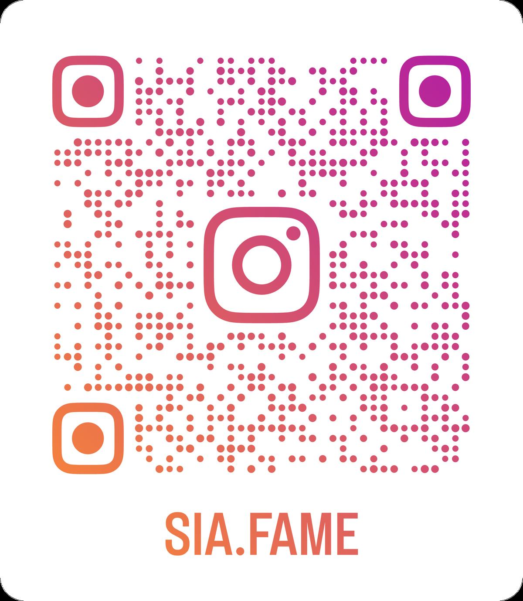

Background & Objective
Costume for movement, character, and scale
A costume-focused musical production emphasising movement, character expression, and large-scale ensemble coordination — requiring functional yet expressive designs suitable for dance-heavy staging.
I established the overall costume direction by analysing the script, character arcs, and the musical's energetic tone — exploring how choreography, ensemble scenes, and quick character transitions could be visually supported through design.
I developed tone-by-tone styling categories — Music / Dance / Student / Teachers — to maintain visual consistency while highlighting individuality.
"A costume design project balancing character identity, dancer mobility, and large-scale ensemble visual unity across 34 performers."
Process
From pattern to performance
-
01
Concept & Design Direction
Before production, I analysed each character's role, personality, and choreographic demands. Developed tone-by-tone styling categories to ensure visual consistency while maintaining individuality across the large cast.
Sketches exploring silhouette, colour palette, and character group identity
-
02
Workshop — Craft & Construction
Produced costumes using pattern drafting, fabric cutting, and machine stitching — designing skirts, tops, and accessories tailored to each performer's measurements. This stage built technical understanding of how fabrics behave under lighting, sweat, and constant movement during musical performance.
Pattern drafting, fabric cutting, and workshop fitting process
-
03
Designing for Performance
Created costumes considering character personality, functionality, and period influence. Particular attention was given to dance sequences — where costumes needed freedom of movement, durability, and visual clarity on stage.
Costume samples and mannequin fittings prior to dress rehearsal
-
04
Rehearsal Coordination via SM Reports
When unable to attend rehearsals, I reviewed the SM report to check notes on costume issues, performer movement, and scene requirements. Based on these updates, I coordinated with the cast and crew to adjust designs and refine costume direction.
SM rehearsal report used to coordinate remote costume adjustments
-
05
Technical Rehearsal & Quick-Change Setup
During technical rehearsals, monitored how costumes interacted with lighting, choreography, and fast-paced transitions — refining details to ensure stability on stage. Prepared identical costume presets for each performer before the dress rehearsal and coordinated with the stage team to support fast quick-changes, especially for performers with multiple roles.


Result
Performance photos
Achievements & Reflections
What I learned
This project strengthened my ability to manage costume logistics for a large ensemble cast — 34 actors, including 8 dancers requiring rapid quick-changes.
I learned to adjust designs based on movement, sweating, stage spacing, and lighting — ensuring each costume supported both character identity and physical performance. Working closely with dancers and the lighting team helped me understand how costume design enhances visual storytelling and on-stage energy.
